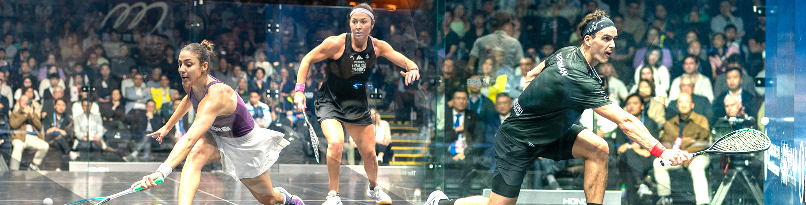

HKUST-GZ Squash League（2026 Spring）
球员积分榜 Player Leaderboard
| 排名 Rank |
照片 Photo |
姓名 Name |
积分 Points ▼ | 比赛场次 Matches |
胜/负 W/L |
|---|
点击"积分"列标题可以排序 | Click "Points" column header to sort
一、赛事宗旨 I. Purpose
为促进壁球运动在校内的推广，增强交流与参与度，特举办本次壁球联赛。本赛事采用灵活赛制，以适应不同水平和时间安排的参赛者。
To promote squash on campus, enhance communication and participation, this league is organized. The event adopts a flexible format to accommodate participants of different skill levels and schedules.
二、参赛对象 II. Participants
本次比赛分男子组和女子组。
The competition is divided into Male Division and Female Division.
- 本次比赛面向全校师生。
This competition is open to all faculty and students. - 参赛者需具备基本壁球运动能力并认可本规程，遵守壁球比赛规定。
Participants must have basic squash abilities, acknowledge these regulations, and abide by squash competition rules. - 参赛者须确认自身身体状况适合参加本次比赛，并对自身健康与安全负责，按需佩戴护目镜以及其他相关护具。报名参赛即视为自愿参加并自行承担相关风险。壁球社不对比赛过程中发生的意外伤害或健康问题承担责任。
Participants must confirm their physical condition is suitable for the competition and take responsibility for their own health and safety, wearing protective eyewear and other relevant gear as needed. Entering the competition is considered voluntary participation with self-assumed risks. The squash club is not responsible for any accidental injuries or health issues during the competition.
三、比赛用球与规则 III. Ball and Rules
- 比赛使用统一比赛用球（白色单/双黄点球）。
Unified competition balls (white single/double yellow dot) will be used. - 采用国际壁球联合会（WSF）规则。
World Squash Federation (WSF) rules. - 采用 PAR11 计分制（每局 11 分）。
PAR11 scoring system (11 points per game). - 比赛采用三局两胜制（BO3）。
Best of 3 games format (BO3). - 如出现争议例如阻挡等情况，联赛阶段需比赛双方商议决定是否重开该球。
In case of disputes such as obstruction during the match, both players must negotiate to decide whether to replay the point.
四、赛制说明 IV. Competition
本次比赛分为两个阶段：
The competition consists of two stages:
（一）联赛阶段（自由约赛） (I) League Stage
参赛者在规定时间内自行预约场地并完成比赛，比赛结果计入积分排名。
Participants schedule courts and complete matches within the designated period, with results contributing to points rankings.
（二）决赛阶段（集中比赛） (II) Finals Stage
联赛阶段排名前若干名（具体名次依照实际参与人数另行决定）进入淘汰赛阶段，具体赛程另行通知。
Top-ranked players from the league stage (specific number to be determined based on actual participation) will enter the knockout stage, with detailed schedule to be announced separately.
五、联赛阶段匹配规则 V. League Stage Match Rules
为兼顾公平性与灵活性，联赛阶段采用分阶段匹配机制，为期两个月（三月和四月）。双方可提前在壁球社微信社群自行约赛，或者在场地临时匹配，结果在比赛结束后经过双方同意，在微信社群上传。
To balance fairness and flexibility, the league stage adopts a phased matching mechanism, lasting two months (March and April). Players can arrange matches in advance through the squash club WeChat group or match on-site, with results uploaded to the WeChat group after mutual agreement.
| 比赛阶段 Stage | 说明 Description |
|---|---|
| 定位赛 Placement Matches |
参赛者需完成5场比赛进行排名定位。在此期间，参赛者可与任意其他参赛者约赛，至少需要和3名不同对手进行比赛。 Participants must complete 5 matches for ranking placement. During this period, participants can challenge any other participant, but must play against at least 3 different opponents. |
| 排位赛 Ranked Matches |
参赛者完成5场比赛之后，自动进入排位赛阶段。参赛者仅允许挑战当前排名前后3名以内的选手。 After completing 5 matches, participants automatically enter the ranked stage. Participants may only challenge opponents within 3 positions of their current ranking. |
为避免刷分行为，同一对手最多计入 1 场有效比赛成绩。
To prevent score exploitation, only 1 match result against the same opponent will count.
每场比赛按胜负计分：
Points are awarded per match result:
| 比赛结果 Result | 积分 Points |
|---|---|
| 2–0 | 3分 / 3 pts |
| 2–1 | 2分 / 2 pts |
| 1–2 | 0分 / 0 pts |
| 0–2 | 0分 / 0 pt |
六、决赛阶段规则 VI. Finals Stage Rules
决赛阶段将采用淘汰赛制，具体赛程另行通知。
The finals stage will adopt a knockout format, with specific schedule to be announced separately.

香港科技大学（广州）壁球社
挥拍之间，快乐运动——欢迎加入最健康运动社团！
According to “Forbes” for years “the healthiest sport in the world”, burns calories, increases aerobic fitness, increases flexibility, develops strength, improves hand-eye coordination

什么是壁球？
壁球是一项在四面墙的室内球场进行的高速对抗运动，球速快、节奏紧凑，既能锻炼身体，也能锻炼反应和思维。
有研究称壁球是“最健康的运动”之一——燃脂、塑形、解压全都安排！
不论你是运动小白还是高手，都能在壁球中找到乐趣。
香港科技大学（广州）体育馆有着大湾区最好的壁球设施之一。
社团介绍
我们是香港科技大学（广州）壁球社。本社团为香港科技大学（广州）的非盈利运动兴趣团体。
旨在通过组织定期的壁球活动，提升同学和老师们的身体素质，促进交流与合作，营造健康积极的运动氛围。
定期活动：
壁球公开课
我们将在隔周举行壁球体验课，邀请俱乐部教练为大家进行壁球教学。课程通过社团群内接龙报名，具体时间会提前通知。
每次课程将分为两个时间段，分别为【初级场】和【中级场】。
参加课程最好自备球拍和白色双黄点壁球，穿着薄底运动鞋。
友谊赛
在课程之余我们也将组织友谊赛，促进同学们之间的交流与切磋。同时也欢迎大家在群里自由组队，共同进步。
近期活动
2025/12/26 第十次壁球公开课2025/11/25 第九次壁球公开课
2025/11/21 第八次壁球公开课
2025/11/14 第七次壁球公开课
2025/10/24 第六次壁球公开课
2025/07/04 第五次壁球公开课
2025/06/20 第四次壁球公开课
2025/05/30 第三次壁球公开课
2025/05/09 第二次壁球公开课
2025/04/25 第一次壁球公开课
入门知识 / 打法演示
球拍和装备推荐
-
入门球拍：
不推荐铝合金球拍，因为手腕负担大；入门级碳素球拍价格适中（约 ¥300），二手性价比更高。
【小于500】Oliver、Karakal（甜区大、重量控制好）。
想要更好体验：Tecnifibre、HEAD、DUNLOP（与 PSA 选手同款路线）。
-
运动鞋服：
服装随意，透气即可；鞋类建议网球鞋/羽毛球鞋/乒乓球鞋，不建议跑鞋。可选：
亚瑟士 Upcourt 6 / Gel Rocket 11 / Gel-Renma，阿迪达斯 Crazyflight。
安全事项提醒
- 壁球为高强度运动，请确保自身无心脏相关疾病。
- 打球前请充分热身，避免运动损伤。
- 注意场上安全，避免挥拍误伤他人。
- 18 岁以下请佩戴护目镜；所有同学老师均推荐佩戴。
- 如有身体不适请及时休息，安全第一。
其他事项（FAQs）
- Q: 没有基础可以参加吗？
A: 完全可以！活动分为初级/中级场，零基础也有教学。 - Q: 需要自带球拍和装备吗？
A: 建议自备，首次可借用。尽量使用碳素球拍以保护手腕。 - Q: 壁球与羽毛球/网球有何不同？
A: 壁球在封闭场地进行，球速快、节奏紧，发力方式不同，更注重核心力量与小臂。 - Q: 选择哪种球？
A: 训练建议黄点/双黄点；颜色按场地选择，校内推荐白球。 - Q: 我是女生，如果拍柄太宽怎么办？
A: 可选择窄握把款式，购买前咨询店家。 - Q: 壁球拍有假货吗？
A: 基本没有，品类小众造假成本高。 - Q: 练了几次还是不好，是不是不适合？
A: 享受过程，每次进步一点点即可，不要焦虑。 - Q: 和其他球类有何区别？
A: 壁球球路变化多，更具“博弈”感；瞬时爆发力要求更高。